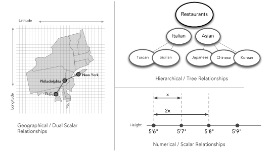
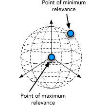
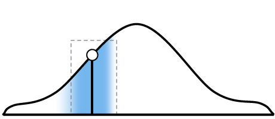

Objects and Topics
Each object in the system can be described by various attributes. We call these attributes “topics.” For example, an individual’s profile on an online personals site would be an object, and that person’s height, location and interests would be the topics used to describe that object. On an e-commerce site a product would be an object and that product’s price, length, width, rating and features would be topics used to describe that object.
Relationships within Topics
The Discovery Engine understands many kinds of relationships within topics. It can understand, for example, that 5′6″ is closer to 5′7″ than it is to 5′8″; that New York is closer to Philadelphia than it is to Washington; and that “rock” is a category of “music” and that “punk rock” is a subcategory of “rock.”
See how Transparensee’s Discovery Engine allows users to personalize search results by adjusting the importance of search criteria.

In addition to the kinds of relationships the Discovery Engine natively understands, the engine has a flexible API allowing clients to develop custom data structures and relationships.
Dimensions
When a search is conducted, the Discovery Engine first returns objects that are perfect matches across all topics. When no such objects remain, it returns objects that are closely related by topic. The engine examines each topic in turn and calculates how closely related each component of that topic is to the one being queried on. This gives the system an understanding of the object’s dimension within a particular topic. Dimension provides an easy way to grasp how relevant any one component of a query is to the entire dataset across a single topic.
Aggregating Relevance
Once the Discovery Engine understands how a query spans different dimensions, it can aggregate results across multiple dimensions to provide a single relevance value. This value is the object’s relevance.
Adjust Weightings to Calibrate Relevance Score
The Discovery Engine makes it easy to change the way objects and topics relate to one another through a system of weightings. Adjusting the weightings on particular topics, or on the relationships between topics, will cause the engine to recalculate relevance and display the results in a new order.


Dimensions within a topic
For instance, in the online personals example, increasing the weighting (importance) of the “location” topic relative to the other topics would show potential dates who live closer geographically. In the music example, the weightings between genres could be adjusted to capture the similarities and differences between rock sub-genres.
The Discovery Engine’s flexible support for tuning relevance scores and result orderings means there is no more need to write time-consuming brittle SQL queries to implement custom result orderings.
Personalize Weightings for Individual Users and Segments
The Discovery Engine supports user-level personalization of weightings to ensure that individual users or segments see the results that are most relevant to them. There are a number of ways to implement results personalization, including:
- Giving your users the ability to set their own weightings. As users change their importance weightings, the results will change for them in real-time.
- Running A / B tests to determine the weightings and results ordering that generate the highest return for particular segment.
- Tracking and analyzing users’ search behavior to calibrate the metadata weightings.